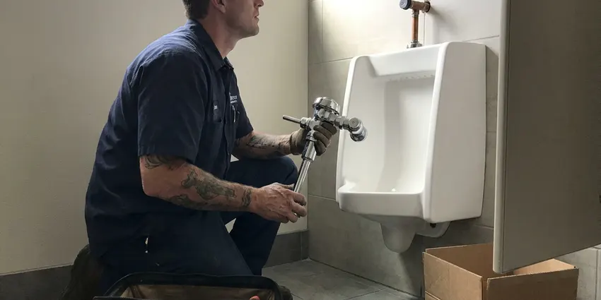

Faucet Replacement in Bedford, TX
DFJ Plumbing provides fast and efficient faucet replacement for homes and businesses across Bedford, TX.
- Fast, Local Plumbers
- Licensed & Insured
- Upfront Pricing
- Quality Workmanship

Ready for a New Faucet in Your Home in Bedford, TX?
Contact DFJ Plumbing today for reliable plumbing solutions that fit your needs and budget.
Professional Faucet Replacement Services in Bedford, TX
DFJ Plumbing specializes in all types of faucet replacement, from leaky kitchen sinks to outdated bathroom fixtures. We understand the specific plumbing challenges faced by homeowners in Bedford, ensuring every replacement is done right the first time.
Our expertise includes:
- Kitchen and Bathroom Faucet Replacement
- Outdoor and Utility Faucet Upgrades
- Repair of Corroded Faucets and Pipes

Additional Bathroom Plumbing Services in Bedford, TX
From toilets to showers, our bathroom plumbing team in Bedford, TX repairs, installs, and replaces every fixture with clean, code-compliant work.


Customers
Why Choose DFJ Plumbing for Faucet Replacement in Bedford, TX?
Our team makes sure your new faucet is installed correctly and efficiently, minimizing disruption to your home. We pride ourselves on clear communication and lasting results.
- Local Expertise, Our plumbers are familiar with Bedford water supply characteristics and common fixture issues, ensuring tailored solutions.
- Quality Fixtures, We work with reputable faucet brands known for their durability and performance, offering options for every style and budget.
- Code Compliance, All faucet replacements adhere to local plumbing codes and standards in Texas, guaranteeing safety and proper function.
Citywide Coverage
DFJ Plumbing proudly serves every neighborhood and surrounding area of Bedford for all faucet replacement needs. Whether you are in the heart of downtown or on the outskirts, our team is ready to provide prompt service.
Experienced Team
Our plumbing team has extensive experience specifically with faucet replacement in Texas homes, dealing with everything from hard water scale to foundation shifts that impact plumbing. We train our technicians on the latest installation techniques for all faucet types.
Safety-First Approach
Safety and code compliance are paramount for every faucet replacement job we undertake. We make sure all connections are secure, water pressure is checked, and any potential cross-contamination issues are addressed according to Texas plumbing regulations.
Trusted Certified Bedford Plumbing Services Professionals
At DFJ Plumbing, we take pride in providing certified plumbing services throughout Bedford, TX. Backed by recognized industry credentials, our experienced plumbers combine technical skill with genuine customer care. Whether it is repair, installation, or maintenance, we follow strict safety and quality standards to deliver lasting results you can trust.
Call Us Now PHCC Plumbing Contractor Recognition
PHCC Plumbing Contractor Recognition Better Business Bureau (BBB) Accreditation
Better Business Bureau (BBB) Accreditation Angi Certified Pro
Angi Certified Pro ISO 9001 Quality Management Certification
ISO 9001 Quality Management CertificationReliable Faucet Replacement Services in Bedford, TX
Kitchen Faucet Replacement in Bedford
A leaking or broken kitchen faucet can be a major inconvenience, wasting water and causing potential damage. Our plumbers specialize in replacing all types of kitchen faucets, including pull-down, pull-out, single-handle, and bridge styles. We can help you choose a durable replacement that matches your kitchen's aesthetic and provides reliable performance, considering factors like Bedford's water hardness that can affect fixture longevity. We ensure proper sealing and connection for a leak-free installation.

Bathroom Faucet Replacement in Bedford, TX
Upgrading your bathroom faucets can significantly enhance the look and feel of your space while resolving leaks or low pressure. We replace widespread, centerset, single-hole, and wall-mount bathroom faucets. Our team handles everything from removing old, corroded fixtures to installing new, efficient models. We pay close attention to drain assemblies and supply lines, which are often prone to wear in older Texas homes, ensuring a complete and lasting solution.
Outdoor and Utility Faucet Replacement in Bedford
Outdoor spigots and utility sink faucets are essential but often overlooked until they fail. In Bedford's climate, these can be exposed to heat, occasional freezes, and hard water, leading to cracks or persistent leaks. We provide robust replacements for hose bibs, laundry room faucets, and utility sink fixtures. Our installations focus on weather resistance and durability, preventing costly water waste and potential foundation damage from constant dripping near your home.
Delta Faucet Replacement in Bedford, TX
Delta is a popular brand known for its innovative designs and reliable performance. Our technicians are highly experienced in replacing all models of Delta faucets, from kitchen to bathroom. We stock common parts and are familiar with their specific installation requirements, ensuring a quick and correct replacement. Trust us to maintain the quality you expect from your Delta fixture with expert service throughout Bedford, TX.
Moen Faucet Replacement in Bedford
Moen faucets are a common choice for many homeowners due to their style and warranty. If your Moen faucet is leaking, corroded, or simply outdated, DFJ Plumbing offers professional replacement services. We understand the various valve types and cartridges used in Moen products, making the replacement process smooth and efficient. We'll ensure your new Moen faucet operates flawlessly and provides years of trouble-free use.
Emergency Faucet Replacement in Bedford, TX
A burst faucet or a severe, unfixable leak can quickly become an emergency, threatening water damage to your home. DFJ Plumbing offers emergency faucet replacement services throughout Bedford, TX to address urgent situations. Our rapid response team will quickly assess the problem, shut off the water if necessary, and replace the faulty faucet to restore your plumbing and prevent further damage. Don't let a major leak turn into a disaster.
Commercial Faucet Replacement in Bedford
Businesses in Bedford rely on functioning plumbing, and a broken commercial faucet can disrupt operations. We provide specialized faucet replacement services for commercial kitchens, restrooms, and utility areas. Our plumbers are equipped to handle heavy-duty, ADA-compliant, and specialized commercial fixtures, ensuring minimal downtime for your business. We focus on durable, high-traffic solutions that meet commercial code requirements.

Cost-Effective Faucet Replacement Options in Bedford, TX
We understand that budget is a consideration for any home improvement. DFJ Plumbing offers cost-effective faucet replacement solutions without compromising on quality. We can recommend various faucet options, from budget-friendly utility models to premium designer fixtures, providing clear pricing upfront. Our goal is to give you the best value and a long-lasting replacement that fits your needs and budget here in Bedford, TX.
Faucet Replacement Near Me in Bedford, TX
Looking for 'faucet replacement near me' in Bedford, TX? DFJ Plumbing is your local plumbing expert, ready to serve your neighborhood. Our prompt and professional team is always nearby to address your faucet issues, ensuring quick resolution and lasting quality.
When you need reliable faucet replacement, choosing a local company like DFJ Plumbing means faster service and plumbers who understand Bedford's specific housing and plumbing needs. We pride ourselves on being a trusted neighbor for all your plumbing concerns.
DFJ Plumbing at a Glance
- Licensed and insured plumbers serving Bedford, TX
- 24/7 emergency service with same-day scheduling
- Clear written estimates, no hidden fees
- 4.9-star rated by 812+ Texas customers
Bedford Map
Bedford Information
- Population
- 48,370
- Area codes
- 817/682/972
- Service area
- Bedford and communities within 40 miles
- Nearby
- Euless, North Richland Hills, Grapevine, Irving
Faucet replacement in Bedford, TX is crucial due to the region's hard water, which can accelerate wear and tear on internal components, making regular maintenance or timely replacement essential to prevent leaks and water damage to your home's foundation.
Expert Services
Trust our professionals for reliable DFJ Plumbing solutions in Bedford, TX.
Our Specialized Plumbing Services in Bedford, TX
At DFJ Plumbing, we provide a complete range of plumbing services across Bedford, TX. From leak detection to full system installations, our team ensures fast, precise, and affordable service for both residential and commercial properties. Explore our core services below:


How Our Faucet Replacement Process Works in Bedford, TX
Our faucet replacement process is designed for efficiency and minimal disruption to your daily routine.
Request a Quote
Call (737) 405-5978 or fill out our online form to schedule your faucet replacement service. We'll discuss your needs and provide an upfront estimate for the job.
On-Site Assessment
Our licensed plumber will arrive at your Bedford home to assess the existing faucet, inspect the plumbing, and confirm the best replacement solution. We'll answer any questions you have.
Professional Installation
We will carefully remove your old faucet and expertly install the new one, ensuring all connections are secure and leak-free. We test everything thoroughly before we leave.
Frequently Asked Questions About Faucet Replacement in Bedford
The cost of faucet replacement in Bedford, TX typically ranges from $200 to $600, depending on the type of faucet, its complexity, and any necessary plumbing adjustments. This price usually includes labor and basic materials, but not the faucet fixture itself, which can vary from $50 to over $500 depending on brand and features.
We service and install all major faucet brands, including Delta, Moen, Kohler, American Standard, Pfister, and many others. Our plumbers are familiar with the specific installation requirements and common issues for a wide variety of manufacturers.
While some basic faucet replacements can be a DIY project, it's often best to hire a professional. Incorrect installation can lead to leaks, water damage, or even issues with your home's water pressure. Our plumbers ensure proper sealing and connection.
In Texas, faucets often leak due to worn-out washers, O-rings, or cartridges, which can degrade faster with hard water. High water pressure, corrosion from mineral buildup, and general wear and tear over time are also common culprits.
Typically, a permit is not required for a direct faucet replacement unless it involves significant alterations to the existing plumbing system or relocating water lines. If there are major modifications, we will advise you on any necessary permitting.
Common signs include persistent dripping or leaking even after minor repairs, visible corrosion or rust on the faucet body, reduced water pressure, difficulty turning the handles, or a wobbly faucet base. Sometimes, it's simply an aesthetic upgrade.
To extend your faucet's life, regularly clean it with non-abrasive cleaners, avoid over-tightening handles, and address minor drips promptly. Consider a whole-home water softener to combat hard water mineral buildup, which is common in many parts of Texas.
Absolutely. Faucet replacement is an excellent opportunity to upgrade to a newer style, a different finish, or even a touchless model. We can help you choose a faucet that is compatible with your existing sink and plumbing setup.
What People Are Saying About Our Plumbing Experts?

James P.
Our commercial plumbing system had a leak under the sink, and DFJ Plumbing handled it professionally. The plumbers arrived quickly and restored everything without disruption to our customers.
Commercial Plumbing · Euless, TX
Patricia H.
We had a slab leak that two other companies could not find. DFJ Plumbing located it in under an hour, explained our options, and the price matched the quote to the dollar.
Slab Leak Repair · Euless, TX
Daniel K.
A pipe burst at 11 pm and they actually answered. The plumber showed up within the hour, shut everything down, and had us back to normal the next morning. Could not ask for more.
Emergency Plumbing · Irving, TXRobert G.
The trenchless sewer replacement saved our front yard. They walked us through the camera inspection footage first so we knew exactly what we were paying for.
Sewer Line Replacement · Irving, TX
Emily R.
I called DFJ Plumbing for plumbing repair, and the technician was fast, polite, and thorough. They explained the problem clearly and fixed it the same day. I will definitely hire them again. Highly recommended!
Plumbing Repair · North Richland Hills, TX
Mark T.
When our office needed drain cleaning, DFJ Plumbing provided quick, reliable service. The plumber arrived on time and made sure every drain flowed perfectly before leaving. Very satisfied.
Drain Cleaning · North Richland Hills, TX